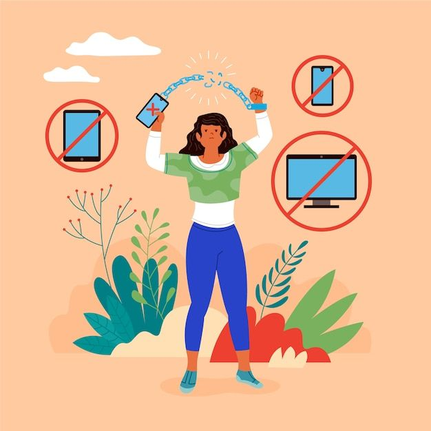
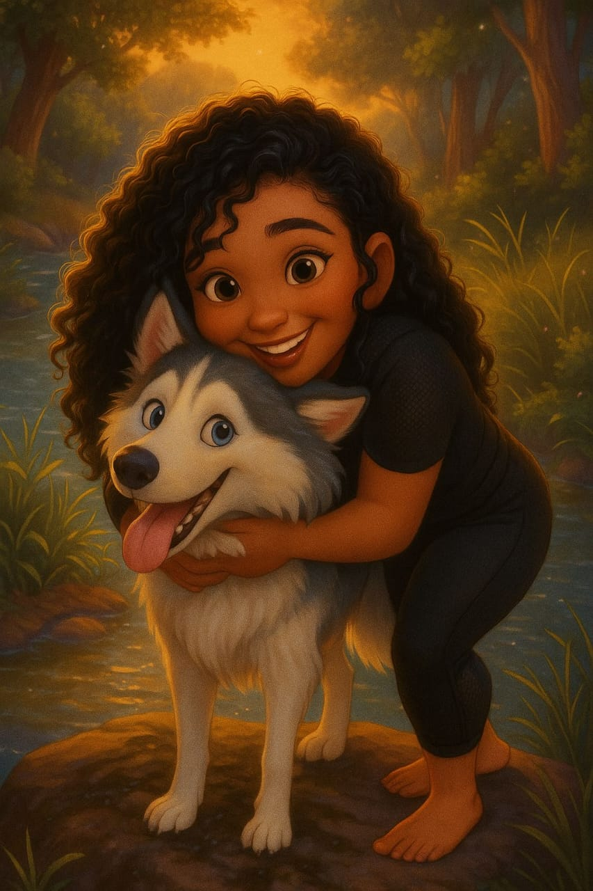

I Tried Living Without My Phone for an enitre month and It Was Weirdly Peaceful
Septermber 30, 2025 by Melissa Knight

When I decided to live without my phone for an entire month, I thought it would be unbearable. No texts, no social media, no endless scrolling to fill awkward silences. The first few days were rough—I kept reaching for it out of habit, feeling phantom vibrations and wondering what I was missing. But slowly, the silence became soothing. I started noticing things: the sound of birds in the morning, the way my coffee tasted, even how often people around me were glued to their screens.
By week three, I felt lighter. My thoughts weren't constantly interrupted, and I had more time to read, reflect, and actually be present. The strangest part? Hardly anyone noticed I was gone. No frantic messages, no “Where have you been?”—just a quiet digital absence. It made me realize how much noise we create online, and how little of it truly matters.
I referred to my dogs as my kids—and apparently, that was controversial.
October 03, 2025 by Melissa Knight

When I casually referred to my dogs as my children during a group chat with some old college friends, I didn't expect it to spark such a heated reaction. To me, it was a harmless expression of love—I feed them, care for them, worry about their health, and yes, I even talk to them like they're toddlers. But apparently, some people felt I was trivializing parenthood, as if calling my dogs “kids” somehow undermined the experience of raising human children. I get it—raising children is a monumental task, and nothing I do for my dogs will ever match the complexity of parenting a human being. But that doesn't mean the love I feel is any less real. My dogs rely on me for everything, and in return, they offer a kind of unconditional loyalty that's hard to describe.
The backlash surprised me. I wasn't trying to compare or compete—I was simply sharing how deeply I care for my pets. For many of us, animals are more than companions; they're family. It's not about replacing or replicating the human experience—it's about honoring the bond that exists in its own right. Maybe it's time we stop policing how others express affection and start recognizing that love, in all its forms, deserves respect. So if calling them my “kids” makes someone uncomfortable, that's okay. But it won't stop me from doing it. Because in my world, love isn't measured by species—it's measured by connection, care, and the quiet joy of knowing someone depends on you.